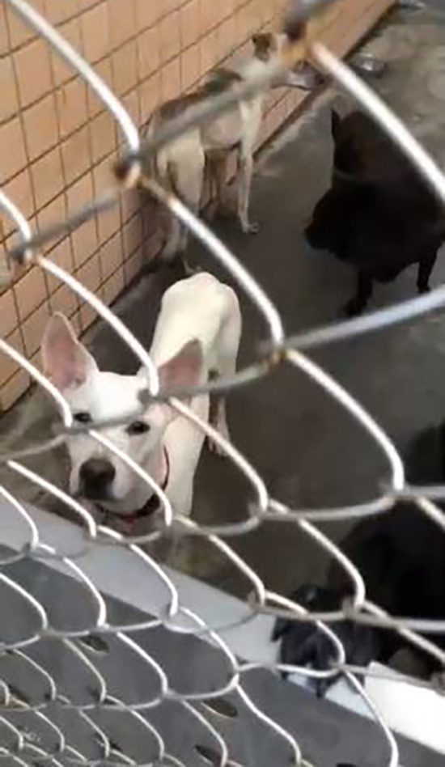
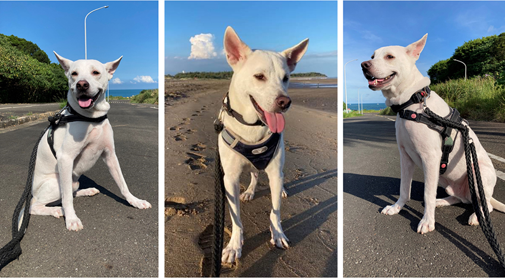

牠不是英雄雷神，只是我可愛的索爾
宋育萍│永續發展辦公室
狗派的我，因長期在外租屋無法養寵物；2020年有自己的窩，可以不用一直搬遷後，立馬跑到附近的收容所去找自己的愛犬。當時想念父母家已去汪星球三年的黑狗，所以決定要領養黑色或黃色的米克斯，但事情的發展總是與自己的預期不同，我與一隻個性膽小嚴重自閉的白色米克斯對上了眼，嗯，應該是我看上牠，因為牠膽小到不敢與人類對視。我花了兩周時間，每天去洗刷收容所的排便物，就近與牠培養感情，但牠過於封閉，一直不肯接受我的靠近，收容所的員工於是建議，將牠帶回家，在單純安靜的家裏會比吵雜的收容所更容易讓一狗一人好好的培養感情。為了讓牠盡快的融入人類的環境，並希望牠與雷神一樣的勇敢，我叫牠「索爾」。
|  | ||
| 2019年收容所的索爾。 |
狗的尾巴可以表現出牠的快樂與恐懼，索爾在新家花了半年才不把尾巴夾在腿間，花了一年才終於舉起尾巴快樂的搖擺。這期間也帶牠看了獸醫，聽醫生的建議嘗試雄性激素的藥物，最終只能讓牠可以出門散步不用這麼的害怕人、車、燈光與突然的聲響，但牠終生膽小害怕的個性是沒辦法改變了。
頭一年與索爾在互相磨合期間，我始終不懂，對牠掏心掏肺、無微不至的照顧，卻還是沒辦法讓牠放下戒心讓我靠近，甚至還逃跑兩次，其中一次讓我找了三天兩夜，我挫折到想要放棄，甚至想聽別人的建議送回收容所，最後還是不捨牠並堅持下去。現在已過了四年十個月了，雖然牠還是那個怕人、怕光及遇到突發事件就第一個跑開，不會保護我的索爾，但至少牠已經是隻懂得開心就搖尾巴、會撒嬌會等門的普通小狗。牠不需要強壯到可以當我的狗保鑣，因為我會保護牠，如果牠聽的懂人類的話，我會告訴牠，我很幸福能遇到牠，謝謝牠豐富了我的生活。
|  | ||
| 現在的索爾。 |